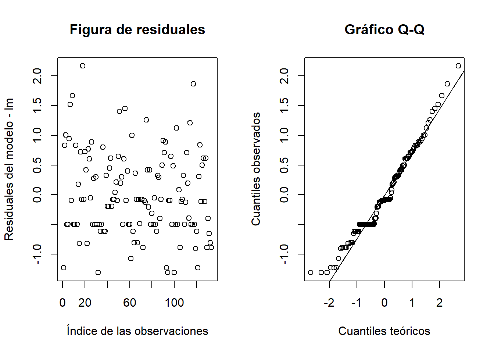
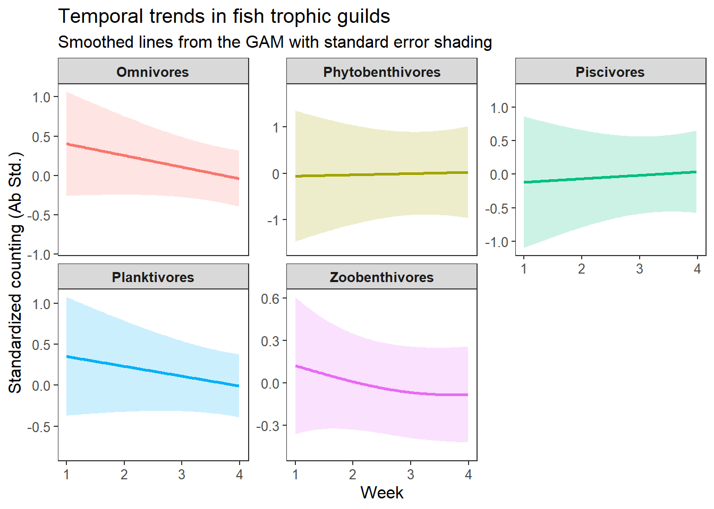

m1 m2 m3 m4 m5 m6 m7
318.0 325.0 308.0 328.5 312.9 320.9 324.6 Análisis de los resultados
El presente ejercicio consiste en el procesamiento inicial de los datos entregados por los profesores Lenin Florez y Alejandro Sandoval, para dar respuesta al siguiente requerimiento: “Analizar el efecto de cambios en las fases lunares (ciclo lunar - Moon) y horarios de día vs. noche (Time), sobre los patrones de abundancia en gremios tróficos de peces estuarinos, censados en el Golfo de Urabá”. Se pretende analizar que características temporales como las semanas de pesca (week), las fases lunares (moon) y las jornadas día-noche (time) afectan los patrones de abundancias en los diferentes gremios tróficos de peces estuarino en distintas zonas del Golfo de Urabá.
Estructura de los datos:
Los datos tienen variables categóricas (como Semanas, fases lunares y jornadas)
Las abundancias de los peces están organizadas por especies y gremios tróficos.
Existe una posible dependencia dentro de cada combinación de niveles (por ejemplo, abundancias dentro de semanas, de zonas, de fases lunares y de gremios tróficos).
Las estructuras jerárquicas modelan adecuadamente la dependencia de los datos, por ejemplo, al considerar que las observaciones dentro de una misma semana, fase lunar o jornada no son independientes.
Los efectos aleatorios permiten modelar la variabilidad no explicada por los predictores fijos y capturan patrones específicos de grupos (ej. especies o gremios tróficos).
Estructura jerárquica propuesta
Mediciones:
Variables independientes: Semana de pesca (Week), fases lunares (Moon), y jornada día-noche (Time).
Variable dependiente: Abundancia de peces (Abundance).
Anidamiento:
- Zonas del Golfo de Urabá como efectos aleatorios (*no se tabularon pero pueden incluirse al modelo).
Factores aleatorios:
Gremios tróficos de peces también como un efecto aleatorio.
También pueden ser las diferentes especies de peces.
Ecuación del modelo propuesto
Un modelo lineal mixto con efectos aleatorios puede expresarse como:
\(Abundancia\) = \(β_0\) + \(β_1\) × \(Week\) + \(β_2\) × \(Moon\) + \(β_3\) × \(Time\) + \(γ\) + \(δ\) + \(ε\)
Dónde:
β_0:Intercepto general.β_1,β_2,β_3:Coeficientes de los efectos fijos para las semanas, fases lunares, y jornadas día-noche.γ:Efecto aleatorio de las zonas.δ:Efecto aleatorio del gremio trófico.ε:Error residual.
Área de estudio: Zonas del Golfo de Urabá en Colombia.

A partir del anterior modelo realizado, se realizaron los siguientes pasos:
Paso 1. Se aplicó el principio de parsimonia, orientado a la selección del mejor modelo, el cual permita identificar a los predictores que mejor se relacionan con la abundancia de los peces. Se proponen dos diagnósticos de selección, con los paquetes lme y
MuMIn, respectivamente. El modelo seleccionado fue aquel que presentó el menor valor de los estimadores AIC y BIC.Paso 2. Inicia con el diagnóstico de ajuste REML (Máxima Verosimilitud Restringida), el cual permite la comparabilidad de este modelo con otros similares de efectos fijos y aleatrorios.
En este mismo paso se analiza al afecto aleatorio (trophic guild), asociado a la variabilidad entre los gremios tróficos en cuanto a sus niveles de abundancia, utilizando a la variabilidad del intercepto y del residual del modelo. Este diagnóstico también se hace para el efecto fijo (Time), para este caso el día y la noche mostraron un efecto significativo sobre la abundancia de peces, aumentando considerablemente en la noche. En cuanto a la correlación del efecto fijo con la abundancia, no se detecta problemas de colinealidad.
Finalmente los residuales del modelo son homogéneos (no hay problemas de heterocedasticidad), son independientes (no hay problemas de autocorrelación) y son simétricos (posiblemente se cumple el supuesto de normalidad).
Paso 3. Se realizan unas figuras tomadas del mansucrito de De Felipe et al. (2024), que sirve de base para los modelos estrusturales - SEM y modelos mixtos jerárquicos de efectos aleatorios, estos últimos aplicados en este análisis.
Figuras de los gremios tróficos. La primera figura (Figure 3) se realiza con un GAM (modelo aditivo generalizado), siguiendo las recomendaciones de De Felipe et al. (2024), para proyectar regresiones no lineales con suavizamiento (LOESS) entre la variable dependiente (en este caso, la abundancia estandarizada de peces) y las variables independientes (como
Week). Este GAM se usa para visualizar las tendencias temporales (por semanas) de la abundancia entre los diferentes gremios tróficos de peces, mediante regresiones suavizadas.Se realiza también una figura aplilada (Figure 4) en la que se destaca a los omnivoros como el gremio dominante del ecosistema evaluado, resaltando cambios temporales que inciden en la variabilidad de la abundancia total.
Modelo lineal mixto de efectos aleatorios “lm”
A continuación se realizará un procedimiento paso a paso, para la construcción y análisis de los elementos del modelo más parsimonioso de los datos.
Paso 1. Selección del modelo más parsimonioso
Será aquel que con el menor número de predictores (efectos fijos del modelo mixto), explique la mayor variabilidad de la abundancia en los diferentes gremios tróficos de peces.
Nota. No se puede incluir la variable aleatoria “Zone”, porque presenta un problema de singulariadad, debido a que su intercepto en el modelo es cero (0) o que no contribuye a explicar la variabilidad de la abundancia. Se diagnosticará el modelo que mejor se ajusta a los datos, y de las tres variables predictoras (Moon, Week y Time).
Opción A. Comparación de modelos. Con el paquete lme, se analizan modelos con diferentes combinaciones de predictores. Se usarán los criterios AIC() y BIC() para evaluar los modelos.
m1 m2 m3 m4 m5 m6 m7
329.5 345.2 319.5 351.6 327.4 344.1 350.6 De acuerdo a estos diagnósticos, el mejor modelo es el No. 2. porque es el que presenta menos AIC y BIC.
\(Abundancia\) = \(β_0\) + \(β_1\) × \(Time\) + \(γ\) + \(ε\)
Dónde:
β_0:Intercepto general.β_1:Coeficientes de los efectos fijos para Horarios día-noche (time).γ :Efecto aleatorio del gremio trófico.ε:Error residual.
Opción B. Selección automatizada. El paquete MuMIn tambien permite identificar el mejor modelo, seleccionando al que presente el menor AIC. Para este caso el resultado es el mismo al aterior, el modelo es el que solo incluye a los horarios día-noche (modelo 3), con un AIC: 315.3.
Global model call: lmer(formula = log(Ab + 1) ~ Week + Moon + Time + (1 | `Trophic guild`),
data = data, na.action = na.fail)
---
Model selection table
(Intrc) Moon Time Week df logLik AICc delta weight
3 1.217 + 4 -149.978 308.3 0.00 0.868
7 1.395 + -0.04854 5 -151.471 313.4 5.15 0.066
1 1.493 3 -153.729 313.6 5.37 0.059
5 1.688 -0.05565 4 -154.976 318.3 10.00 0.006
4 1.143 + + 8 -152.468 322.1 13.83 0.001
2 1.367 + 7 -155.496 325.9 17.62 0.000
8 1.661 + + -0.08568 9 -153.286 326.0 17.77 0.000
6 1.906 + -0.08977 8 -156.246 329.7 21.38 0.000
Models ranked by AICc(x)
Random terms (all models):
1 | `Trophic guild`Resumen de los datos. Se totalizan las abundancias por cada horario día-noche (Time), excluyendo a los aportes del resto de predictores (Week y Moon).
NOTA: Dataframe datos, solo tiene 6 datos.
| Time | Trophic.guild | Ab |
|---|---|---|
| Day | Omnivores | 42 |
| Day | Phytobenthivores | 4 |
| Day | Piscivores | 10 |
| Day | Planktivores | 65 |
| Day | Zoobenthivores | 26 |
| Night | Omnivores | 212 |
La ecuación del modelo seleccionado es la siguiente:
\(Abundancia\) = \(β_0\) + \(β_1\) × \(Time\) + \(γ\) + \(ε\)
Paso 2. Diagnóstico del Modelo
Criterio REML: El valor es 307, un indicador relativo del ajuste del modelo. No tiene interpretación absoluta, pero es útil para comparar modelos con la misma estructura.
Número de Observaciones y Grupos: 136 observaciones. 6 grupos en la variable aleatoria
Trophic guild.
2.1 Efectos Aleatorios (Trophic guild).
Vale la pena aclarar que tanto los efectos aleatorios, como el fijo, presentaron respuestas significativas, el primero por explicar un porcentaje considerable de la variabilidad de las abundancias y el segundo por determinar el incremento en horas de la noche.
Intercepto Aleatorio (
Trophic guild): La varianza es 0.1536, lo que indica que hay diferencias moderadas entre los grupos tróficos en sus valores promedio de la respuesta log-transformada (log(Ab + 1)). La desviación estándar asociada es 0.3919. Esto sugiere que aunque hay diferencias entre gremios tróficos, estas no explican toda la variabilidad en las abundancias de peces.Residual: La varianza residual es 0.5107, con una desviación estándar de 0.7146. Esto representa la variabilidad no explicada en el modelo. La mayor variabilidad en la abundancia se da a nivel residual, lo que sugiere que otros parámetros no incluidos en el modelo podrían estar influyendo.
2.2 Efectos Fijos (predictor - Time)
Intercepto: Representa el valor promedio de
log(Ab + 1)cuando el tiempo es de día (Time = Day). Su valor estimado de 1.1695 es estadísticamente significativo (Estimado < t = 5.744). En el intercepto (e^{1.1695} ≈ 3.22), la abundancia promedio en la mañana es aproximadamente 3.22 individuos.TimeNight: Su valor estimado de 0.4111 es estadísticamente significativo (estimado < t = 3.111), lo que indica un efecto real del tiempo. El coeficiente estimado es 0.4111, lo que sugiere que durante la noche (Time = Night), el valor delog(Ab + 1)aumenta en 0.4111 unidades en promedio respecto a la mañana o de día.
2.3 Correlación de los Efectos Fijos
Existe una correlación moderada negativa (-0.451) entre el intercepto y el efecto de TimeNight. Esto es común en modelos mixtos y no suele ser problemático. No se presentan problemas de colinealidad, ya que -0.45 es una correlación baja.
2.4 Residuos
- Rango de residuos escalados: La mayoría de los residuos están en torno a 0, pero hay algunos valores extremos (hasta 3.0305), lo que podría sugerir casos atípicos o variabilidad adicional no explicada.
2.5 Diagnósticos gráficos de los residuales

La Figure 1 muestra dos opciones gráficas para diagnosticar algunos requisitos o supuestos del modelo, en especial la homogeneidad y la independencia de los residuos así como posibles tendencias simétricas o normales.
1. Gráfico de residuales vs. índice de observaciones
Este gráfico ayuda a verificar si las relaciones lineales y los supuestos de homocedasticidad se cumplen. La distribución de los residuales es hogénea (no hay problemas de heterocedasticidad). Como los residuales están distribuidos de manera aleatoria alrededor de 0, sugiere que el modelo ajusta bien los datos. En caso que se presenten patrones como una curva o una tendencia ascendente/descendente, podría indicar que el modelo no captura completamente la estructura de los datos (tendencias sistemáticas). Si los residuales muestran una variabilidad creciente o decreciente (como un cono), sugiere que la varianza no es constante (heterocedasticidad).
2. Gráfico Q-Q (cuantil-cuantil) de los residuales
Este gráfico evalúa si los residuales siguen una distribución normal, como generalmente se asume en los modelos lineales mixtos. Para este caso, los residuales no se ajustan de manera esperada a un patrón normal (forma de S), por lo que este tipo de modelos mixtos es una buena opción.
Un gráfico Q-Q apropiado respalda la validez de los intervalos de confianza y pruebas de hipótesis en el modelo. Si los residuales no son normales, se podrían considerar transformaciones de los datos o métodos robustos. El Eje x relaciona a los cuantiles teóricos de una distribución normal estándar. El Eje y muestra a lo cuantiles observados de los residuales. La Línea de referencia (qqline): Representa la distribución normal esperada. Los puntos deberían alinearse aproximadamente con esta línea. Puntos cercanos a la línea indican que los residuales se ajustan bien a una distribución normal.
Si los puntos se desvían significativamente de la línea en los extremos, podría sugerir colas largas (distribución leptocúrtica) o cortas (distribución platicúrtica). Una curvatura en forma de S podría indicar que los residuales no son normales, posiblemente debido a la presencia de outliers o a una transformación incorrecta de los datos.
Figura del modelo seleccionado
La Figure 2 muestra que en la noche se concentra la mayor abundancia de peces, especialmente de planctivoros y de fitobenctivoros.

Figuras para gremios tróficos
1. Figura de regresiones GAM
La Figure 3 los omnivoros y los planctivoros, presentaron tendencias negativas a los largo de las seis semanas del estudio, mientras que los piscivoros mostraron un incremento leve en el aumento de su abundancia. Estos cambios se asocian a un patrón d disminución marcado de la abundancia total hacia la semana 4 y un cambio en el ensamblaje trófico dominado inicialmente por omnívoros al compuesto principalmente por planctivoros (Figure 4).

2. Figura de áreas para gremios tróficos
En la Figure 4 que el ecosistema estudiado es dominado por los omnivoros, con proporciones superiores al 75% en las diferentes semanas, aunque disminuye notablemente desde la semana 4. Los planctivoros muestran un leve aumento de su abundancia desde la semana 4, quizá por el aumento en la disponibilidad de su recurso. El resto de grupos se mantienen relativamente constantes. El patrón de abundancia total (línea blanca suavizada), muestra un descenso hacia la semana 4 y posteriormente un aumento, quizá por la influencia del patrón que se indicó con los omnívoros, por ser el gremio dominante.